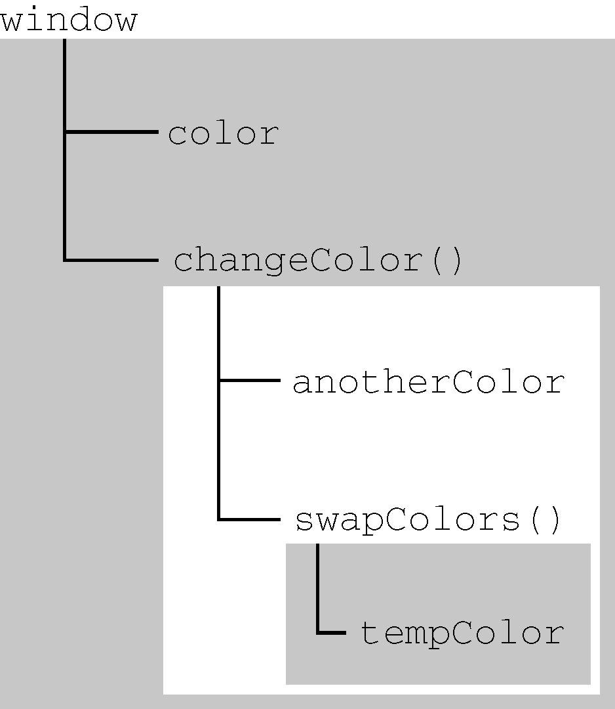

执行上下文（以下简称“上下文”）的概念在JavaScript中是颇为重要的。变量或函数的上下文决定了它们可以访问哪些数据，以及它们的行为。每个上下文都有一个关联的变量对象（variable object），而这个上下文中定义的所有变量和函数都存在于这个对象上。虽然无法通过代码访问变量对象，但后台处理数据会用到它。
全局上下文是最外层的上下文。根据ECMAScript实现的宿主环境，表示全局上下文的对象可能不一样。在浏览器中，全局上下文就是我们常说的window对象（第12章会详细介绍），因此所有通过var定义的全局变量和函数都会成为window对象的属性和方法。使用let和const的顶级声明不会定义在全局上下文中，但在作用域链解析上效果是一样的。上下文在其所有代码都执行完毕后会被销毁，包括定义在它上面的所有变量和函数（全局上下文在应用程序退出前才会被销毁，比如关闭网页或退出浏览器）。
每个函数调用都有自己的上下文。当代码执行流进入函数时，函数的上下文被推到一个上下文栈上。在函数执行完之后，上下文栈会弹出该函数上下文，将控制权返还给之前的执行上下文。ECMAScript程序的执行流就是通过这个上下文栈进行控制的。
上下文中的代码在执行的时候，会创建变量对象的一个作用域链（scope chain）。这个作用域链决定了各级上下文中的代码在访问变量和函数时的顺序。代码正在执行的上下文的变量对象始终位于作用域链的最前端。如果上下文是函数，则其活动对象（activation object）用作变量对象。活动对象最初只有一个定义变量：arguments。（全局上下文中没有这个变量。）作用域链中的下一个变量对象来自包含上下文，再下一个对象来自再下一个包含上下文。以此类推直至全局上下文；全局上下文的变量对象始终是作用域链的最后一个变量对象。
代码执行时的标识符解析是通过沿作用域链逐级搜索标识符名称完成的。搜索过程始终从作用域链的最前端开始，然后逐级往后，直到找到标识符。（如果没有找到标识符，那么通常会报错。）
看一看下面这个例子：
var color = "blue";
function changecolor() {
if (color === "blue") {
color = "red";
} else {
color = "blue";
}
}
changecolor();对这个例子而言，函数changeColor()的作用域链包含两个对象：一个是它自己的变量对象（就是定义arguments对象的那个），另一个是全局上下文的变量对象。这个函数内部之所以能够访问变量color，就是因为可以在作用域链中找到它。
此外，局部作用域中定义的变量可用于在局部上下文中替换全局变量。看一看下面这个例子：
var color = "blue";
function changecolor() {
let anothercolor = "red";
function swapcolors() {
let tempcolor = anothercolor;
anothercolor = color;
color = tempcolor;
// 这里可以访问color、anothercolor和tempcolor
}
// 这里可以访问color和anothercolor，但访问不到tempcolor
swapcolors();
}
// 这里只能访问color
changecolor();以上代码涉及3个上下文：全局上下文、changeColor()的局部上下文和swapColors()的局部上下文。全局上下文中有一个变量color和一个函数changeColor()。changeColor()的局部上下文中有一个变量anotherColor和一个函数swapColors()，但在这里可以访问全局上下文中的变量color。swapColors()的局部上下文中有一个变量tempColor，只能在这个上下文中访问到。全局上下文和changeColor()的局部上下文都无法访问到tempColor。而在swapColors()中则可以访问另外两个上下文中的变量，因为它们都是父上下文。图4-3展示了前面这个例子的作用域链。

图 4-3
图4-3中的矩形表示不同的上下文。内部上下文可以通过作用域链访问外部上下文中的一切，但外部上下文无法访问内部上下文中的任何东西。上下文之间的连接是线性的、有序的。每个上下文都可以到上一级上下文中去搜索变量和函数，但任何上下文都不能到下一级上下文中去搜索。swapColors()局部上下文的作用域链中有3个对象：swapColors()的变量对象、changeColor()的变量对象和全局变量对象。swapColors()的局部上下文首先从自己的变量对象开始搜索变量和函数，搜不到就去搜索上一级变量对象。changeColor()上下文的作用域链中只有2个对象：它自己的变量对象和全局变量对象。因此，它不能访问swapColors()的上下文。
注意 函数参数被认为是当前上下文中的变量，因此也跟上下文中的其他变量遵循相同的访问规则。
虽然执行上下文主要有全局上下文和函数上下文两种（eval()调用内部存在第三种上下文），但有其他方式来增强作用域链。某些语句会导致在作用域链前端临时添加一个上下文，这个上下文在代码执行后会被删除。通常在两种情况下会出现这个现象，即代码执行到下面任意一种情况时：
try/catch语句的catch块with语句这两种情况下，都会在作用域链前端添加一个变量对象。对with语句来说，会向作用域链前端添加指定的对象；对catch语句而言，则会创建一个新的变量对象，这个变量对象会包含要抛出的错误对象的声明。看下面的例子：
function buildurl() {
let qs = "?debug=true";
with(location){
let url = href + qs;
}
return url;
}这里，with语句将location对象作为上下文，因此location会被添加到作用域链前端。buildUrl()函数中定义了一个变量qs。当with语句中的代码引用变量href时，实际上引用的是location.href，也就是自己变量对象的属性。在引用qs时，引用的则是定义在buildUrl()中的那个变量，它定义在函数上下文的变量对象上。而在with语句中使用var声明的变量url会成为函数上下文的一部分，可以作为函数的值被返回；但像这里使用let声明的变量url，因为被限制在块级作用域（稍后介绍），所以在with块之外没有定义。
注意 IE的实现在IE8之前是有偏差的，即它们会将
catch语句中捕获的错误添加到执行上下文的变量对象上，而不是catch语句的变量对象上，导致在catch块外部都可以访问到错误。IE9纠正了这个问题。
ES6之后，JavaScript的变量声明经历了翻天覆地的变化。直到ECMAScript 5.1，var都是声明变量的唯一关键字。ES6不仅增加了let和const两个关键字，而且还让这两个关键字压倒性地超越var成为首选。
使用var的函数作用域声明
在使用var声明变量时，变量会被自动添加到最接近的上下文。在函数中，最接近的上下文就是函数的局部上下文。在with语句中，最接近的上下文也是函数上下文。如果变量未经声明就被初始化了，那么它就会自动被添加到全局上下文，如下面的例子所示：
function add(num1, num2) {
var sum = num1 + num2;
return sum;
}
let result = add(10, 20); // 30
console.log(sum); // 报错：sum在这里不是有效变量这里，函数add()定义了一个局部变量sum，保存加法操作的结果。这个值作为函数的值被返回，但变量sum在函数外部是访问不到的。如果省略上面例子中的关键字var，那么sum在add()被调用之后就变成可以访问的了，如下所示：
function add(num1, num2) {
sum = num1 + num2;
return sum;
}
let result = add(10, 20); // 30
console.log(sum); // 30这一次，变量sum被用加法操作的结果初始化时并没有使用var声明。在调用add()之后，sum被添加到了全局上下文，在函数退出之后依然存在，从而在后面可以访问到。
注意 未经声明而初始化变量是JavaScript编程中一个非常常见的错误，会导致很多问题。为此，读者在初始化变量之前一定要先声明变量。在严格模式下，未经声明就初始化变量会报错。
var声明会被拿到函数或全局作用域的顶部，位于作用域中所有代码之前。这个现象叫作“提升”（hoisting）。提升让同一作用域中的代码不必考虑变量是否已经声明就可以直接使用。可是在实践中，提升也会导致合法却奇怪的现象，即在变量声明之前使用变量。下面的例子展示了在全局作用域中两段等价的代码：
var name = "jake";
// 等价于：
name = 'jake';
var name;下面是两个等价的函数：
function fn1() {
var name = 'jake';
}
// 等价于：
function fn2() {
var name;
name = 'jake';
}通过在声明之前打印变量，可以验证变量会被提升。声明的提升意味着会输出undefined而不是Reference Error：
console.log(name); // undefined
var name = 'jake';
function() {
console.log(name); // undefined
var name = 'jake';
}
使用let的块级作用域声明
ES6新增的let关键字跟var很相似，但它的作用域是块级的，这也是JavaScript中的新概念。块级作用域由最近的一对包含花括号{}界定。换句话说，if块、while块、function块，甚至连单独的块也是let声明变量的作用域。
if (true) {
let a;
}
console.log(a); // referenceerror: a没有定义
while (true) {
let b;
}
console.log(b); // referenceerror: b没有定义
function foo() {
let c;
}
console.log(c); // referenceerror: c没有定义
// 这没什么可奇怪的
// var声明也会导致报错
// 这不是对象字面量，而是一个独立的块
// javascript解释器会根据其中内容识别出它来
{
let d;
}
console.log(d); // referenceerror: d没有定义
let与var的另一个不同之处是在同一作用域内不能声明两次。重复的var声明会被忽略，而重复的let声明会抛出SyntaxError。
var a;
var a;
// 不会报错
{
let b;
let b;
}
// syntaxerror: 标识符b已经声明过了
let的行为非常适合在循环中声明迭代变量。使用var声明的迭代变量会泄漏到循环外部，这种情况应该避免。来看下面两个例子：
for (var i = 0; i < 10; ++i) {}
console.log(i); // 10
for (let j = 0; j < 10; ++j) {}
console.log(j); // referenceerror: j没有定义严格来讲，let在JavaScript运行时中也会被提升，但由于“暂时性死区”（temporal dead zone）的缘故，实际上不能在声明之前使用let变量。因此，从写JavaScript代码的角度说，let的提升跟var是不一样的。
使用const的常量声明
除了let，ES6同时还增加了const关键字。使用const声明的变量必须同时初始化为某个值。一经声明，在其生命周期的任何时候都不能再重新赋予新值。
const a; // syntaxerror: 常量声明时没有初始化
const b = 3;
console.log(b); // 3
b = 4; // typeerror: 给常量赋值
const除了要遵循以上规则，其他方面与let声明是一样的：
if (true) {
const a = 0;
}
console.log(a); // referenceerror: a没有定义
while (true) {
const b = 1;
}
console.log(b); // referenceerror: b没有定义
function foo() {
const c = 2;
}
console.log(c); // referenceerror: c没有定义
{
const d = 3;
}
console.log(d); // referenceerror: d没有定义
const声明只应用到顶级原语或者对象。换句话说，赋值为对象的const变量不能再被重新赋值为其他引用值，但对象的键则不受限制。
const o1 = {};
o1 = {}; // typeerror: 给常量赋值
const o2 = {};
o2.name = 'jake';
console.log(o2.name); // 'jake'如果想让整个对象都不能修改，可以使用Object.freeze()，这样再给属性赋值时虽然不会报错，但会静默失败：
const o3 = object.freeze({});
o3.name = 'jake';
console.log(o3.name); // undefined由于const声明暗示变量的值是单一类型且不可修改，JavaScript运行时编译器可以将其所有实例都替换成实际的值，而不会通过查询表进行变量查找。谷歌的V8引擎就执行这种优化。
注意 开发实践表明，如果开发流程并不会因此而受很大影响，就应该尽可能地多使用
const声明，除非确实需要一个将来会重新赋值的变量。这样可以从根本上保证提前发现重新赋值导致的bug。
标识符查找
当在特定上下文中为读取或写入而引用一个标识符时，必须通过搜索确定这个标识符表示什么。搜索开始于作用域链前端，以给定的名称搜索对应的标识符。如果在局部上下文中找到该标识符，则搜索停止，变量确定；如果没有找到变量名，则继续沿作用域链搜索。（注意，作用域链中的对象也有一个原型链，因此搜索可能涉及每个对象的原型链。）这个过程一直持续到搜索至全局上下文的变量对象。如果仍然没有找到标识符，则说明其未声明。
为更好地说明标识符查找，我们来看一个例子：
var color = 'blue';
function getcolor() {
return color;
}
console.log(getcolor()); // 'blue'在这个例子中，调用函数getColor()时会引用变量color。为确定color的值会进行两步搜索。第一步，搜索getColor()的变量对象，查找名为color的标识符。结果没找到，于是继续搜索下一个变量对象（来自全局上下文），然后就找到了名为color的标识符。因为全局变量对象上有color的定义，所以搜索结束。
对这个搜索过程而言，引用局部变量会让搜索自动停止，而不继续搜索下一级变量对象。也就是说，如果局部上下文中有一个同名的标识符，那就不能在该上下文中引用父上下文中的同名标识符，如下面的例子所示：
var color = 'blue';
function getcolor() {
let color = 'red';
return color;
}
console.log(getcolor()); // 'red'使用块级作用域声明并不会改变搜索流程，但可以给词法层级添加额外的层次：
var color = 'blue';
function getcolor() {
let color = 'red';
{
let color = 'green';
return color;
}
}
console.log(getcolor()); // 'green'在这个修改后的例子中，getColor()内部声明了一个名为color的局部变量。在调用这个函数时，变量会被声明。在执行到函数返回语句时，代码引用了变量color。于是开始在局部上下文中搜索这个标识符，结果找到了值为'green'的变量color。因为变量已找到，搜索随即停止，所以就使用这个局部变量。这意味着函数会返回'green'。在局部变量color声明之后的任何代码都无法访问全局变量color，除非使用完全限定的写法window.color。
注意 标识符查找并非没有代价。访问局部变量比访问全局变量要快，因为不用切换作用域。不过，JavaScript引擎在优化标识符查找上做了很多工作，将来这个差异可能就微不足道了。